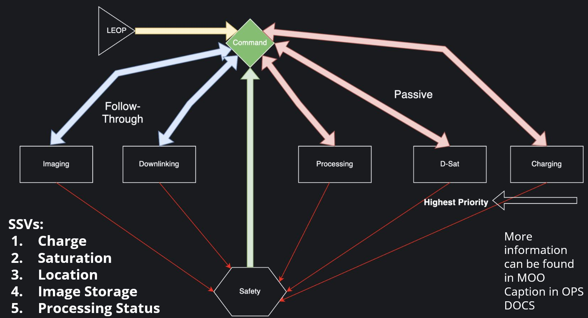
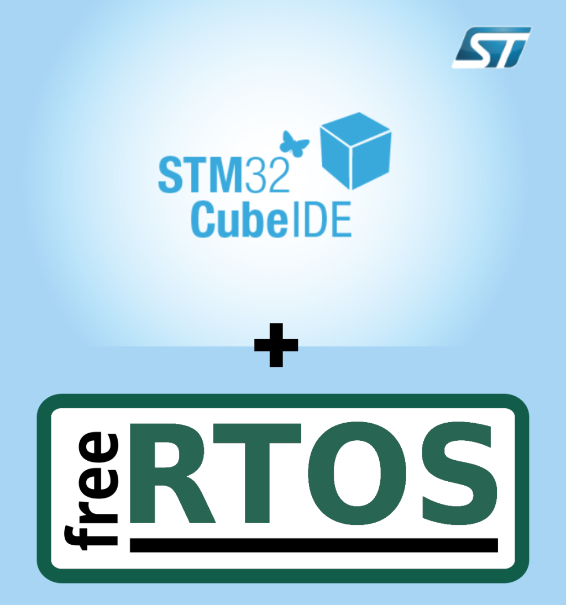
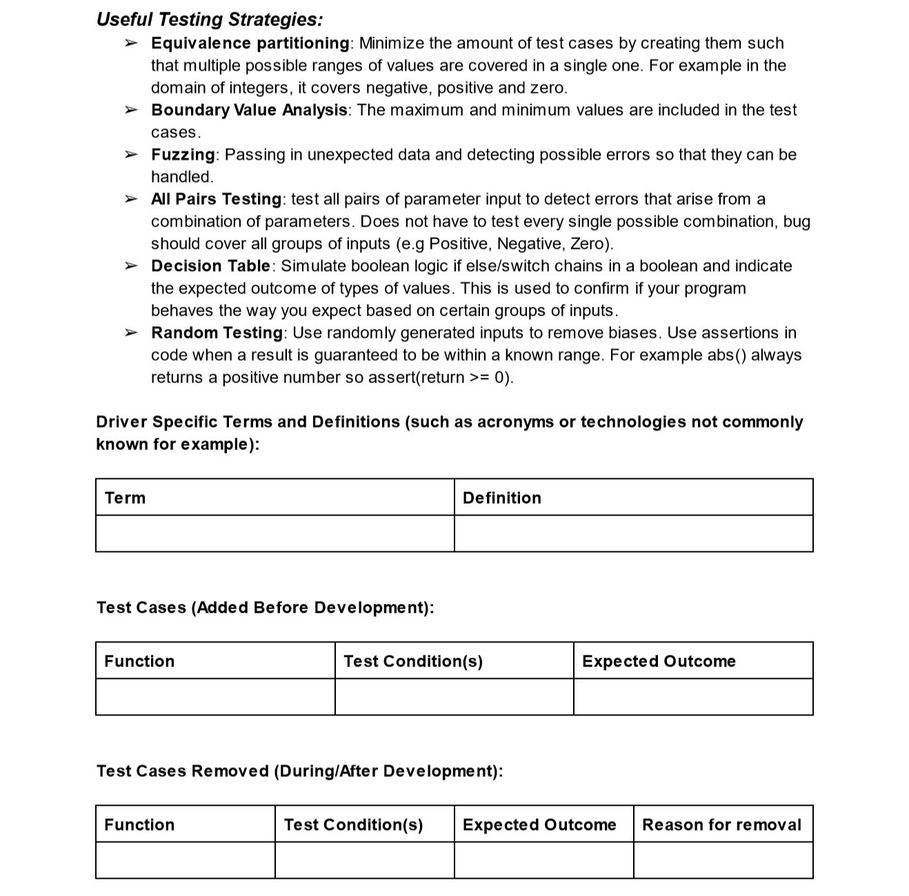
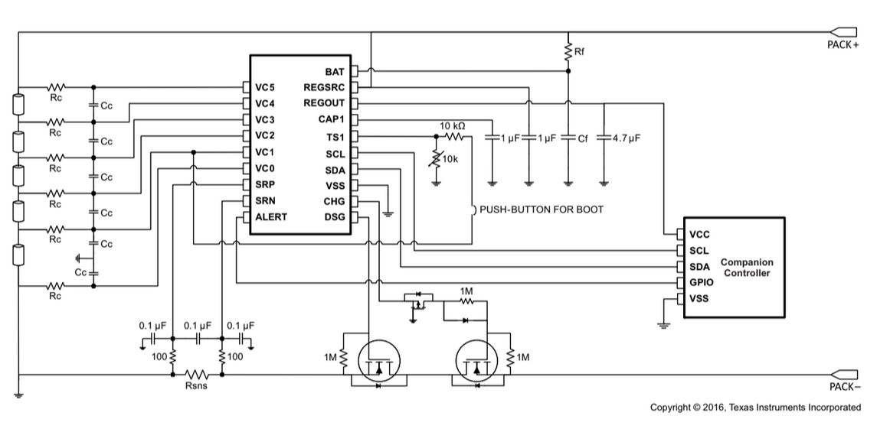

How I Created Embedded System Firmware for a Student Design Team's Hyperspectral Imaging Satellite
Introduction
At the start of my first year of university, I joined the University of Toronto Aerospace Team (UTAT) in the Space Systems division. As someone with a lot of prior programming experience, I decided to join the firmware team for the satellite. The satellite were developed was a hyperspectral imaging satellite, which captures images in many different wavelengths to map crop residue and greenhouse gas emissions of farmland from space. The project is called FINCH, and will be launching on a SpaceX rocket in 2025. Working on the firmware, we followed a strict FSM (Finite State Machine) design pattern, and used FreeRTOS as the operating system. The high-level FSM architecture is shown below. Learning STM32 & FreeRTOS
STM32 is like the industry version of the Arduino, but with more features and a lot more complexity. Upon joining the team, I had to complete a month-long training program to learn how to use the STM32CubeIDE, for firmware development, which I had no prior experience with. I successfully completed the training, and was able to start working on the project (the video at the top of this page) is part of my final demo project for the training programming. Throughout my approximate 1 year on the team, I worked with 2 other members primarily, as well as with the leads of other subsystems to make three notable contributions to the project, as will be discussed below. I should also note, that all code for the STM32 was written in C, and built on top of the FreeRTOS operating system. Team-Wide Firmware Testing Standards
Because of my pre-existing experience, one of my first tasks was to create a testing and requirement framework for all firmware to be developed by the team. Since satellites are very expensive and you can't change anything once they're in space, it's absolutely critical that all code can be tested and verified to be working correctly in chunks, and as a whole. I researched NASA and ESA standards for satellite firmware testing in depth, and created a comprehensive guide, as well as template for planning unit tests, integration tests, and system tests.Below is a screenshot of a small part of the testing document I created, specifically the end of guidelines and beginning of the template.
Reliability-Critical Battery Management System Firmware
My next significant contribution was writing most of the core firmware for the battery management system (BMS) of the satellite. The BMS is important in regulating power flow to the satellite, and charging from the solar panels. Additionally, real-time monitoring of each battery cell voltage and temperature is critical to prevent fires or explosions under unexpected conditions. Finally, the BMS chip we were using did not have an existing library, so myself and another team-member had to scour the datasheet and write our own library from scratch to interface with the chip. The code was written in C, and used FreeRTOS to manage the tasks. The code was also written to be as modular as possible, so that future team members could easily add new features or modify existing ones. All code written was compliant with the testing standards I had developed earlier. Below is a schematic of the BMS system chip from the datasheet, as well as a screenshot of the electrical power PCB on which the chip was integrated. 